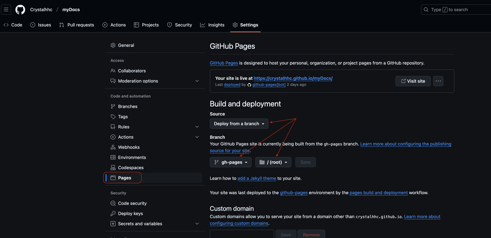
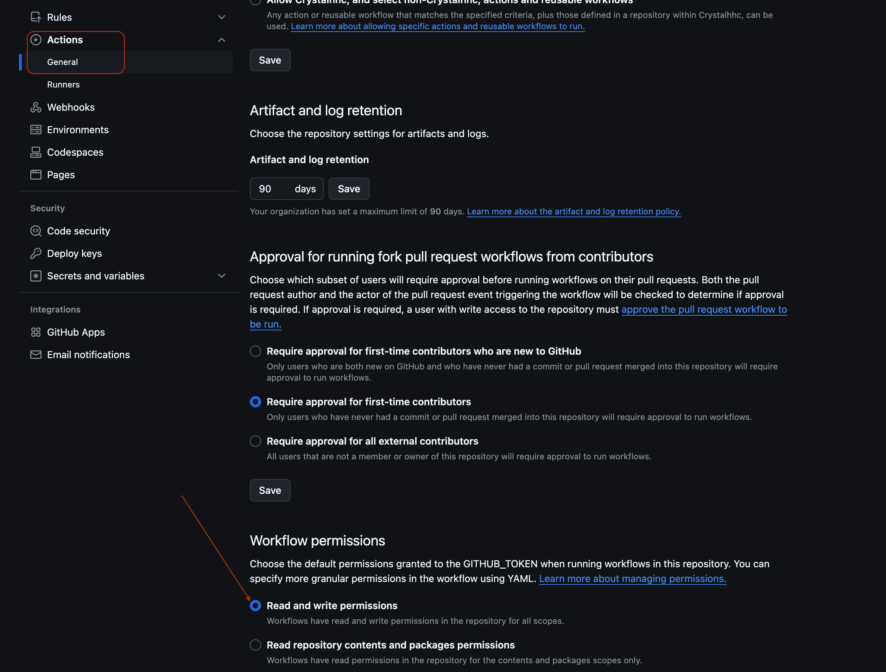

Build a Multi-language Website with Mkdocs Material Theme¶
In this post, I'll share my experience of building a multi-language documentation website using MkDocs with the Material theme. This approach is perfect for maintaining separate but parallel documentation in multiple languages, ensuring a smooth experience for diverse audiences.

English

正體（繁體）中文
Demo Site¶
You can see a live demo of this multi-language documentation setup at: https://crystalhhc.github.io/myDocs/
Feel free to explore the demo to get a better understanding of how the final product looks and functions.
Why Separate Projects Instead of i18n Plugins?¶
You might wonder why we're creating separate projects for each language instead of using internationalization (i18n) plugins like mkdocs-static-i18n in a single project. Here are the key reasons:
-
Simplicity and Flexibility: Managing separate projects for each language allows for greater flexibility in content structure and customization. Each language version can evolve independently if needed.
-
Performance: With separate projects, each language version is built as a standalone site, which can lead to faster build times and better performance, especially for large documentation sets.
-
Plugin Compatibility: Some MkDocs plugins, particularly the blog plugin we're using, may not be fully compatible with i18n plugins. Using separate projects ensures full functionality of all desired features.
-
Easier Content Management: For teams with different people managing different language versions, separate projects can make it easier to assign responsibilities and manage workflows.
-
Alignment with MkDocs Philosophy: The creator of MkDocs Material, Martin Donath, recommends this approach for multi-language setups, stating that "MkDocs is designed for building a single documentation in a single language."
While using i18n plugins can be suitable for some projects, especially those with simpler structures or where maintaining strict parity between language versions is crucial, our approach offers more flexibility and robustness for complex, evolving documentation needs.
Project Layout¶
Our goal is to create a documentation site with both English and Traditional Chinese versions. Here's the basic project structure we'll be working with:
myDocs/
├── .venv/ # Virtual environment directory
├── mydocs-en/ # English documentation project
│ ├── docs/
│ │ ├── index.md # The documentation homepage (English)
│ │ └── ... # Other markdown pages and files
│ └── mkdocs.yml # Configuration file for English docs
├── mydocs-zh-TW/ # Traditional Chinese documentation project
│ ├── docs/
│ │ ├── index.md # The documentation homepage (Traditional Chinese)
│ │ └── ... # Other markdown pages and files
│ └── mkdocs.yml # Configuration file for Traditional Chinese docs
└── README.md # Project overview and instructions
Quick Start: Clone the Sample Repository¶
If you want to get started quickly with a working example, you can clone my sample repository directly from GitHub. This repository contains a fully set up multi-language MkDocs project with both English and Traditional Chinese versions.
To clone the repository:
- Open your terminal.
- Navigate to the directory where you want to clone the project.
- Run the following command:
- Once cloned, navigate into the project directory:
- Set up a virtual environment and install the required dependencies: Now you have a working multi-language MkDocs project! You can start exploring the structure, making changes, and seeing how everything works together. To serve the documentation locally:
Information
-a localhost:8000: This is an option that specifies the address and port on which the server should run .
Visit the following URLs in your web browser to view the documentation:
- English: http://localhost:8000
- Traditional Chinese: http://localhost:8001
This sample repository provides a great starting point for your own multi-language documentation projects. You can now easily switch between languages in your local development environment. Feel free to modify and expand upon it to suit your needs.
In the following sections, we'll go through the process of setting up such a project from scratch, which will give you a deeper understanding of how everything works.
Set Up from Scratch¶
- Create the project root directory:
- Set up a virtual environment:
- Install MkDocs Material:
Creating Language-Specific Projects¶
Developing Multiple Language Versions¶
To work on both language versions simultaneously, you'll need to run two separate server instances. Here's how to do it:
- Open two terminal windows or tabs.
- In each terminal, navigate to the project root directory and activate the virtual environment.
- Then, start a server for each language version as follows:
This setup allows you to view and edit both language versions in real-time, ensuring consistency across your multi-language documentation. You can access:
- English:
http://localhost:8000 - Traditional Chinese:
http://localhost:8001
in your web browser.
Configuring mkdocs.yml for Each Language¶
For each language version, you need to configure the mkdocs.yml file separately. Here's an example for both English and Traditional Chinese:
site_name: My Docs - English
site_url: https://crystalhhc.github.io/myDocs/ # set English as default language
use_directory_urls: false
theme:
name: material
language: en
extra:
alternate: # Language switcher
- name: English
link: https://crystalhhc.github.io/myDocs/ # English as default
lang: en
- name: 正體中文
link: https://crystalhhc.github.io/myDocs/zh-TW/
lang: zh-TW
site_name: 我的文檔
site_url: https://crystalhhc.github.io/myDocs/zh-TW/
theme:
name: material
language: zh-TW
extra:
alternate: # Language switcher
- name: English
link: https://crystalhhc.github.io/myDocs/ # English as default language
lang: en
- name: 正體中文
link: https://crystalhhc.github.io/myDocs/zh-TW/
lang: zh-TW
Information
Language Selection Settings:
name: Language namelink: Absolute url to the language site.lang: an ISO 639-1 language code
Nav Tab Setting¶
The Final Project Layout¶
myDocs/
├── .venv/ # Virtual environment directory
├── .github/
│ └── workflows/
│ └── deploy-docs.yml # GitHub Actions workflow file
├── mydocs-en/ # English documentation project
│ ├── docs/
│ │ ├── index.md # The documentation homepage (English)
│ │ ├── tags.md
│ │ ├── blog/
│ │ │ ├── index.md
│ │ │ └── posts/
│ │ │ └── first-post.md
│ │ ├── ocr/
│ │ │ ├── index.md
│ │ │ ├── introduction.md
│ │ │ ├── roadmap.md
│ │ │ └── features.md
│ │ └── projects/
│ │ └── index.md
│ └── mkdocs.yml # Configuration file for English docs
├── mydocs-zh-TW/ # Traditional Chinese documentation project
│ ├── docs/
│ │ ├── index.md # The documentation homepage (Traditional Chinese)
│ │ ├── tags.md
│ │ ├── blog/
│ │ │ ├── index.md
│ │ │ └── posts/
│ │ │ └── first-post.md
│ │ ├── ocr/
│ │ │ ├── index.md
│ │ │ ├── introduction.md
│ │ │ ├── roadmap.md
│ │ │ └── features.md
│ │ └── Projects/
│ │ └── index.md
│ └── mkdocs.yml # Configuration file for Traditional Chinese docs
├── README.md # Project overview and instructions
├── requirements.txt # Python package requirements
└── .gitignore # Git ignore file
Syncing with GitHub¶
To sync your project with GitHub:
- Initialize Git in the
rootdirectory:
- Create a .gitignore file:
- Add and commit your files:
- Create a new repository on GitHub (let's call it
myDocs) - Link your local repository to GitHub and push:
Deploying to GitHub Pages¶
To deploy your documentation to GitHub Pages:
- Ensure your
mkdocs.ymlfiles are configured with the correctsite_urlas shown in the configuration examples above. - Create a
gh-pagesbranch: - Switch back to the main branch:
- Build and deploy your documentation:
-
In your GitHub repository settings, go to the "Pages" section and set the source to the
gh-pagesbranch. This is animportantstep that is often overlooked.- Go to your GitHub repository.
- Click on
Settingsin the top menu. - In the left sidebar, click on
Pages. - Under
Source, selectDeploy from a branch. - In the
Branchdropdown, selectgh-pages. - Make sure the folder is set to
/ (root). - Click
Save.

Note
Check Repository Permissions:
- Go to your GitHub repository's settings, then to
ActionsunderCode and automationin the left sidebar. - Make sure
Read and write permissionsis selected underWorkflow permissions.

Defining GitHub Actions Workflow¶
To eliminate the need for manual intervention each time you update your documentation, let's design an automated deployment process by creating a GitHub Actions workflow:
- Create a
.github/workflowsdirectory in your repository: - Create a file named
deploy-docs.ymlin this directory: - Add the following content to
deploy-docs.yml:deploy-docs.ymlname: Deploy MkDocs on: push: branches: - main jobs: deploy: runs-on: ubuntu-22.04 # Explicitly specify Ubuntu 22.04 steps: - uses: actions/checkout@v3 - name: Set up Python uses: actions/setup-python@v4 with: python-version: '3.x' - name: Install dependencies run: | python -m pip install --upgrade pip pip install mkdocs-material - name: Build English docs run: | cd mydocs-en mkdocs build --site-dir ../site - name: Build Chinese docs run: | cd mydocs-zh-TW mkdocs build --site-dir ../site/zh-TW - name: Create .nojekyll file run: touch site/.nojekyll - name: Deploy uses: peaceiris/actions-gh-pages@v3 with: github_token: ${{ secrets.GITHUB_TOKEN }} publish_dir: ./site force_orphan: true
Informaiton
Let's explain the details of the above configuration:
-
Title of this workflow
name: Deploy MkDocs - This is the name of the workflow.
-
Note that this must be an absolute link. If it includes a domain part, it's used as defined. Otherwise the domain part of the [
site_url][site_url] as set inmkdocs.ymlis prepended to the link. -
Event Trigger:
on: This section defines when the workflow should run.push: The workflow will trigger on push events.branches: [main]: It will only run when changes are pushed to themainbranch.
- Job Trigger:
jobs: This section defines the jobs that will run as part of this workflow.deploy: This is the name of the job.runs-on: ubuntu-22.04: This specifies that the job will run on anUbuntu 22.04runner.
-
Steps Description:
steps: This section lists the steps that will be executed in the job.- step 1 -
uses: actions/checkout@v3: To check out your repository so the workflow can access it. -
step 2. -
name: Set up Python: To sets up Python environment.- It uses the
actions/setup-python@v4action to set upPython 3.x.
- It uses the
-
step 3 -
name: Install dependencies: To install the necessary Python packages.- It upgrades
pipand installsmkdocs-material.
- It upgrades
-
step 4 -
name: Build English docs: To build theEnglishdocumentation.- It changes to the
mydocs-endirectory and runs mkdocs build. --site-dir ../siteoption specifies where to output the built site.
- It changes to the
-
step 5 -
name: Build Chinese docs: To build theChinesedocumentation.- It's similar to the English build, but outputs to
../site/zh-TW.
- It's similar to the English build, but outputs to
-
step 6 -
name: Create .nojekyll file: To create an empty.nojekyllfile.- This file tells
GitHub Pagesnot to process the site withJekyll.
- This file tells
-
step 8 -
name: Deploy: To deploy the built site toGitHub Pages.- It uses the
peaceiris/actions-gh-pages@v3action for deployment. github_token: ${{ secrets.GITHUB_TOKEN }}: This uses the built-inGITHUB_TOKENfor authentication.publish_dir: ./site: This specifies the directory to publish.force_orphan: true: This option ensures a clean deployment by removing the history of thegh-pagesbranch.
- It uses the
- step 1 -
-
Commit and push this workflow file:
This workflow will automatically build and deploy both language versions of your documentation whenever you push changes to themainbranch.
After setting up the workflow, your documentation will be available at:
- English version: "https://YOUR_USERNAME.github.io/YOUR_REPO_NAME/en/"
- Chinese version: https://YOUR_USERNAME.github.io/YOUR_REPO_NAME/zh-TW/
- Root URL (https://YOUR_USERNAME.github.io/YOUR_REPO_NAME/) will redirect to the English version
Further Studies¶
- In the future, large language models(LLM) could be incorporated to automate the translation work between different language versions.